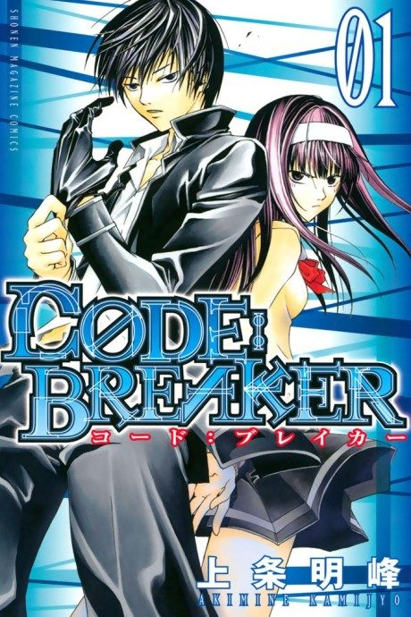
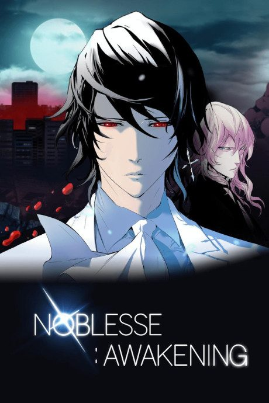
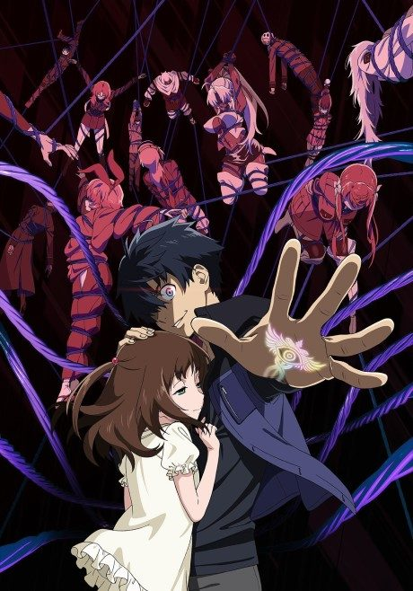

Code:Breaker
CØDE:BREAKER
Sakura sees a boy burning people with blue flames, and learns he's a new transfer student working for a secret group that punishes criminals the law can't touch.
After the anime, read the manga from Chapter 34.
6.3AniList score
—Animeter, no votes yet
13episodes
Rate it or report where you stopped
Anime finished. Where does the manga pick up?
Start at Chapter34
The anime ends at chapter 33, so start at chapter 34 (the beginning of volume 7). The manga is finished at 230 chapters.
133230 end
Season 1Start reading here
More like Code:Breaker
 Manga Ch. 1818.4
Manga Ch. 1818.4
 Manga SBR 247.7
Manga SBR 247.7
 Manga Ch. 1118.0
Manga Ch. 1118.0
 Manga Ch. 1357.3
Manga Ch. 1357.3

Manga Ch. 2007.0 Manga Ch. 6617.9
Manga Ch. 6617.9
 Film7.9
Film7.9
 Manga Ch. 577.6
Manga Ch. 577.6
 Manga Ch. 3408.9
Manga Ch. 3408.9

Unclear4.8 Original7.3
Original7.3
 Manga Ch. 1088.4
Manga Ch. 1088.4